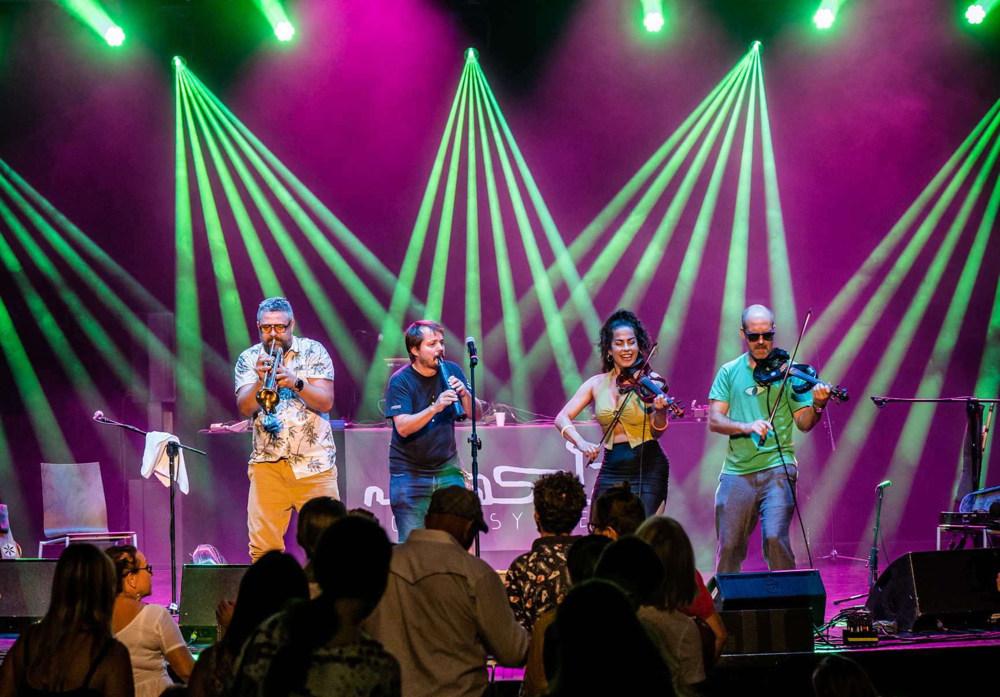
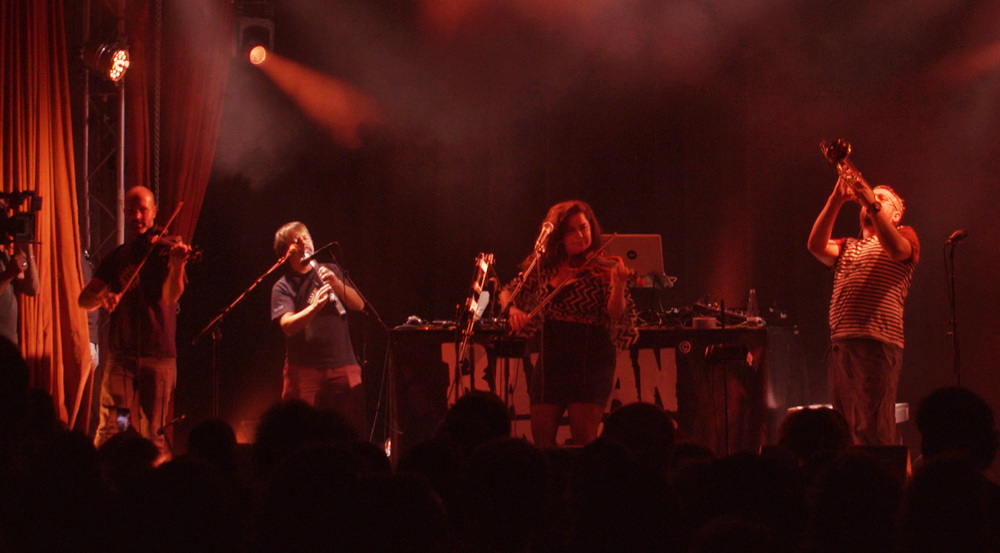

Chorba
Album, 2024
People often think of the Balkans as a crossroads. With their busy trade and cultural routes, the Balkans have been linking the East with the West, the North with the South throughout the centuries. Now can you imagine someone setting up a tent in the midst of that bustling roundabout, in a place where all those roads converge in a swirling mix? Can you imagine, out of the blue, a tent springing up in the middle of that crossroads, a wild and illegal wedding party inside it, a jamming makeshift shelter which blocks the traffic and makes time stand still until the break of dawn? Well, the loud and crazy music that would be played beneath such a tent cover - this is the sound of the ShazaLaKazoo.
Album, 2024
Album, 2016
Album, 2014
Album, 2012
Album, 2010
EP, 2011

